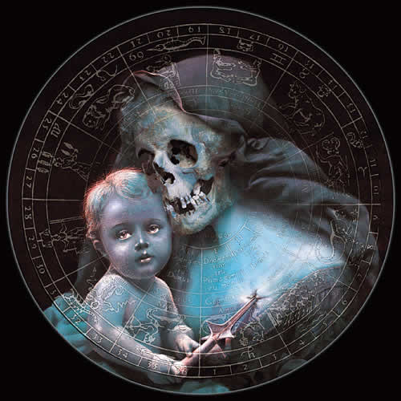

Forums galactiques > Assemblée Galactique : diplomatie officielle > La guerre: Que de tromperies!
Pages : 1 2
| Skalagrim Respect diplomatique : 2  17/05 ETU 19:32 | Score : 3 Détails L'humain de 3 mètres 45 s'avança vers le parloir de l'assemblée. Il tenait dans sa main son insigne: le marteau de thor.
Il ouvrit sa bouche énorme, d'où sortit une voix très grave: Commandants d'Origine, Nous avons mal compris la guerre. Nous avons mal compris la guerre donc mal compris son esprit. Nous avons mal compris notre esprit donc mal compris notre vie. On a souvent haït la guerre. Mais on oublie qu'elle est mère de tout. Elle est mère du souhait de paix. Elle est mère de la souffrance. Elle est mère de la faim. Elle est mère de la production économique et militaire. La Guerre permet un développement de l'ingéniosité, de la ruse et de la force. Certes, elle présente des inconvénients, mais comme toute chose. La paix présente une stabilité gouvernementale, une vie paisible. En revanche, elle prône moins de stimulation, moins de développement militaire, un développement lent. La Guerre et la paix reviennent au même contrairement. Nous n'avons pas les mêmes idéaux que les pacifistes, j'en suis conscient. Mais il faut tout de même savoir que ces idéaux reviennent au même. Le géant quitta l'assemblée. | ||
| Siklariis Respect diplomatique : 99  17/05 ETU 19:39 | Score : 3 Détails Commandant,
Sachez que comme les animaux, l'homme à le droit de tuer pour survivre. La guerre en soit -je suis d'accord- est positive. Mais une guerre c'est souvent contre quelqu'un d'autre. Quand celle-ci est justifiée, il n'y a pas de mal. Mais chercher la guerre pour la guerre c'est une erreur. Le chaos n'engendrera que le néant et au final les "bénéfices" guerriers se perdent. Eliminer les ennemis de l'harmonie, c'est en instaurer une. Mais je pense qu'il ne faut pas que la guerre devienne une prorité. Il faut à tout prix l'éviter mais savoir l'utiliser contre les tétus. Je part cependant du principe que tout le monde peut changer mais lorsqu'ont nous menace il nous faut répondre. Autrement dit, la provocation vous parraitra agréable au début mais vous portera préjudice plus tard. Le respect des autres est essentiel et au cas où quelqu'un le briserai et tenterer un acte guerrier, alors ce sera à vous d'y répondre. Mais s'il vous plait, arrétez d'associer la Paix à une moule sur son rocher. En effet une politique bien calculée et bien plus complexe que ce que nous avons l'habitude de voir peut permettre de stimuler tout le monde et de ne pas sombrer dans la décadence. Tout cela viendra avec le temps je l'éspère et je ne compte pas rester les bras croisés à ce sujet... Merci de m'avoir écouté ; Siklariis Tahl. | ||
| Le Troll Respect diplomatique : 75  17/05 ETU 19:41 | Score : 2 Détails La guerre et la paix sont des horreurs, l'une comme l'autre. La paix prône l'inactivité, ce qui est mauvais. La guerre prône la violence, ce qui n'est pas une bonne chose. La seule chose bien que la guerre apporte, c'est un rapide dévellopement de paix. La guerre et la paix sont indisosiable, comme le bien et le mal. Le seul moyen d''être heureux, c'est de mourrir.
La guerre et la paix sont les facettes de la vie, mais la mort permet de sauver sont âmes de la damnation. La guerre n'a rien de bon, mon cher, mais la paix non plus. | ||
| Actéon Respect diplomatique : 21 17/05 ETU 19:46 | Score : 3 Détails Ainsi l'homme à le droit de tuer pour survivre?
Tu as le droit de tuer un animal pour t'en nourrir à condition que ta joie de le manger soit plus grande que la joie qu'il avait à vivre. Respectueuseument | ||
| Siklariis Respect diplomatique : 99 17/05 ETU 19:49 | Score : 0 Détails Lorsque je dit qu'on a le droit de tuer pour survivre, je nuancerai mes propos : on a le droit de tuer pour survivre... mais survivre de l'attaque de quelqu'un qui a voulu nous tuer.
Cette nuance et la même qui va différencier l'homme de l'animal. Une bête ne cherchera pas à savoir qui elle attaque et si elle a des raisons. Ce n'est que de l'instinc. L'homme, s'il regarde autour de lui et apprécie la vie, il commencera par ne pas oter celle d'un autre, si bien sur cet autre ne souhaite pas sa mort. | ||
| Angelus L Oméga Respect diplomatique : 1305  17/05 ETU 20:08 | Score : 5 Détails On a souvent haït la paix(ici en tout cas, j'en ai l'impression...).
Mais on oublie qu'elle est mère de tout. Elle est mère de la richesse d’idée. Elle est mère de la joie de vivre. Elle est mère des bonnes conditions de vie. Elle est mère de la prospérité économique. C’est la paix, le repos, qui permet la réflexion sur le monde, « pour penser, il faut avoir du temps », les philosophes les plus grands sont ceux nés en temps paisible, où leur vie pouvait être consacrée à la compréhension du monde. Et donc les sciences ont fait de grands pas aussi, car les grands penseurs furent aussi de brillants scientifiques. Un monde en paix, Où la peur de la mort ne ronge pas les âmes, Où chacun peut vivre sans craindre éternellement pour ses proches, Où naissent les esprits fertiles, Où chacun apprend à connaître l’autre, Où chacun peut jouir de la prospérité économique qui en découle, Où la réflexion remplace l’action, Dans lequel il fait bon de vivre, en paix. | ||
| Siklariis Respect diplomatique : 99 17/05 ETU 20:30 | Score : 2 Détails Très belle intervention Commandant Angélus.
A travers ce poème vous avez retranscrit ce que représente vraiment la Paix. L'Harmonie que je recherche et que j'aimerais voir s'installer dans cette Galaxie est un synonyme d'une Paix sans défaut. D'une vraie image de Paix, loin de celle que l'on tente de créer pour justifier les actes guerriers. J'ai réfléchi et la guerre n'a en réalité aucune raison d'exister. La communication permet d'atteindre des objectifs beaucoup plus haut que le plus fort des Commandants. Et même si ça doit prendre 1 an, 10 ans ou 40 ans, que tout le monde prenne conscience de cela un jour. Méditez là-dessus et n'oubliez pas de regarder au loin vos actes avant de faire un choix. Mais surtout : gardez la liberté du choix. Je ne dicte aucune obligation sauf celle de choisir. Merci de m'avoir écouté ; Siklariis Tahl. | ||
| Samsagace Respect diplomatique : 155  17/05 ETU 20:47 | Score : 0 Détails La paix et la guerre sont des choses bien dures à définir.
La Paix serait la bienveillance elle-même ? La Guerre, le Mal lui-même ? Que choisir ? Pour ma part, mon choix est fait... | ||
| Skalagrim Respect diplomatique : 2 17/05 ETU 20:55 | Score : 0 Détails Se battre lors du'une guerre, c'est affirmer ses idéaux, prouver sa valeur, se montrer vainqueur.
A travers le poème d'Angélus on peut observer son esprit tranquille. Avoir un esprit pacifiste, c'est avoir l'esprit tranquille. Avoir un esprit guerrier, c'est avoir l'esprit vif. C'est un paradoxe conséquent mais d'égale valeur. | ||
| Largo Respect diplomatique : 152  17/05 ETU 21:08 | Score : 0 Détails Mais qu'entends-je? Etre guerrier ou pacifiste? Mais pourquoi doit-on choisir? N'est-il pas possible d'être à la fois guerrier et pacifiste?
Je m'explique. Ce que je veux dire par là c'est qu'on peut ne pas chercher la guerre, dans ce cas, on est pacifiste. Mais on peut très bien riposter lorsqu'on est attaqué, et combattre son ennemi jusqu'à obtenir sa reddition. Voyez-vous où je veux en venir? La guerre est une chose futile, mais essentielle. Quiconque n'a pas l'esprit guerrier et est pacifiste conduira son peuple à sa déchéance. Mais en même temps, quiconque a trop l'esprit guerrier amènera lui aussi son peuple vers sa chute. Il faut donc arriver à trouver un juste milieu entre la guerre et la paix. Ne pas être trop guerrier, mais ne pas être trop pacifiste. Avant de vous quitter, je tiens à préciser une chose. Quand je parle de pacifisme, c'est de pacifisme complet, au sens propre du terme. Je parle de ne pas utiliser les armes, jamais, en aucune occasion. | ||
| Zangdar Respect diplomatique : -34  17/05 ETU 21:21 | Score : 0 Détails la guerre ne devrai jamais existé, elle est formé par la haine ou le dégout, le racisme, entraine la guerre, l'ofence amène la guerre, la guerre elle même s'entraine, mais qu'est-ce qui ammène la paie? Des hommes innocents qui ne sont pas racistes ou beliqueux, les défendent, face a d'autres hommesqui les repouses, ces hommes meurent pour des idées qui ne sont pas les leurs, pandent que le concerner fume un mauvais cigare, un pot de caviar a la main, une femme nue dans l'autre,la guerre amène la paie(exemple: révolution) mais aussi la haine.
Zangdar, un combattant mais de coeur | ||
| Koronag Respect diplomatique : 244  17/05 ETU 21:47 | Score : 0 Détails Hm.L'ex ultrème fait du zèle pacifiste?Intéressant.Au passage,je ne fume pas et je ne mange pas de caviar.Sachez que je suis totalement d'accord avec mon élève.La Guerre(avec une majuscule,s'il te plait,Skalagrim) est à l'amont de développements phsychiques comme matériels pour celui que la pratique.Donc,c'est une bonne chose.La Guerre pour la Guerre est la meilleure de toutes,car elle n'est motivée non pas par des sentiments de haine ou de peur mais par le plaisir de guerroyer.
| ||
| Siklariis Respect diplomatique : 99 17/05 ETU 22:05 | Score : 0 Détails Il faut d'abord vaincre par la rhétorique. Si ensuite l'autre riposte par une attaque physique c'est qu'il est vaincu.
Alors le pacifiste se défendra, mais pour lui le combat est déjà gagné car son adversaire ne sera épaulé que par d'autre lâches pendant que lui aura le soutien des justes. | ||
| Koronag Respect diplomatique : 244 17/05 ETU 22:08 | Score : 0 Détails Qui en ce monde pourra déterminer qui est juste et qui ne l'est pas?Comme disait un homme génial:"tout est relatif".
| ||
| Lord bloody II Respect diplomatique : 54  17/05 ETU 22:10  | Score : 0 Détails La guerre c'est le pouvoir.
Le pouvoir de faire mal a l'autre. Le pouvoir de le dominer. Le pouvoir de le controler. Une personne ayant soif de pouvoir a aussi soif de guerre c'est inévitable. Mes amis , la guerre n'est qu'un moyen d'assoir son pouvoir sur les autres. | ||
| Ariétan Respect diplomatique : 102  17/05 ETU 22:14 | Score : 0 Détails Tout est relatif mais tout reste logique.
j'entend et lis des propos dont l'hilarité qu'ils dégagent n'a d'égale que leur abbération. Si demain je prend votre enfant, votre chair et votre sang, que je le torture jusqu'à la mort pour assouvir ma soif de puissance et atteindre mes objectifs, tiendrez vous le meme discourd ? bien respectueusement Ariétan | ||
| Leanorie Jacondia Respect diplomatique : 31 17/05 ETU 22:24 | Score : -1 Détails Dans ce cas la, Ariétan, vous recevriez la visite de la Blonde pour vsou rappeler le sens de la justice...
Enfin, ceux qui mène une guerre injuste recevront la même visite. On ne peux reprocher une guerre faite pour défendre sa population. Une guerre qui a pour but de masscrer d'autres peuples est injuste et donc punissable. | ||
| Ariétan Respect diplomatique : 102 17/05 ETU 22:31 | Score : 0 Détails C'étais ironique naturellement je tenais à faire réagir.
j'apprécie grandement votre réponse commandante, elle représente parfaitement ma manière de penser. Bien respectueusement Ariétan | ||
| Leanorie Jacondia Respect diplomatique : 31 17/05 ETU 22:40 | Score : 0 Détails De l'ironie de votre message, j'en suis tout a fait consciente Commandant.
Mais l'impact recherché est ainsi plus fort. J'espère que nous nous reverrons pour échanger nos idées. | ||
| Siklariis Respect diplomatique : 99 17/05 ETU 22:45 | Score : 2 Détails Commandants,
Effectivement tout est relatif. Mais dans le point de vue que j'évoquais, je considérais comme "juste" celui qui n'est pas lache (donc celui qui n'a pas lancé une guerre parcequ'il ne voulait pas reconnaitre -par exemple- un tord). Ensuite, nous n'avons pas la même définition du lache car pour vous c'est associé avec faible, etc... La différence c'est que ma définition varie tout le temps. Je part de ce principe. Peut-être que plus tard nous seront fixés sur une vraie définition du mot lache, je veux dire applicable à certains Commandants, mais j'en doute. Je ne dirais pas que cela risquerai de me donner raison car sinon certains seraient tentés par ce qu'ils appellent "le plaisir de guerroyer". Mais dans ce cas-la, ils trahiraient l'idée comme quoi ils ne font pas partie de ceux-la. Et c'est ici que je vois des laches : ceux qui sont rattrapés par leur actes mais ne les assument pas. Avoir échoué après avoir essayé de communiquer il faut apprendre à l'accepter et se remettre en question. Répondre par une agression physique c'est montrer qu'on ne l'assume pas. Sur ce je vous laisse car j'ai moultes choses à faire sur ma capitale. Bien à vous ; Siklariis Tahl. |
Pages : 1 2
Forums galactiques > Assemblée Galactique : diplomatie officielle > La guerre: Que de tromperies!